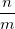
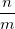
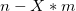
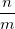

/math-02129bb861061d1a052c592e2dc6b383.png "X") is the integer of  round toward negative infinity. It is functionally similar to MS Excel's mod function.
is the integer of  round toward negative infinity. It is functionally similar to MS Excel's mod function.This function returns the integer modulus (the remainder from division) of integer n divided by integer m, which is denoted by formula

where is the integer of  round toward negative infinity. It is functionally similar to MS Excel's mod function.
int mod2(int n ,int m)
n
m
Returns the integer modulus of integer n divided by integer m.
aa = mod(5, -3); aa = ; //should return 2 bb = mod2(5, -3); bb = ; //should return -1